DRC / LVS / PEX 驗證流程
Lab9 的核心不是只畫出圖，而是要證明 layout 符合製程規則、電路連接正確，並能抽出寄生元件做 post-sim。
三種驗證在檢查什麼？
DRC
Design Rule Check：檢查 layout 幾何規則，例如間距、寬度、overlap、enclosure。成功時結果視窗通常空白。
LVS
Layout Versus Schematic：把 layout 抽成電路，再與 NAND.sp / NOR.sp 比對。成功時會出現 correct / 笑臉。
PEX
Parasitic Extraction：抽出寄生 R、C、coupling capacitance，產生 post-sim 要 include 的 netlist。
DRC 操作與結果判讀
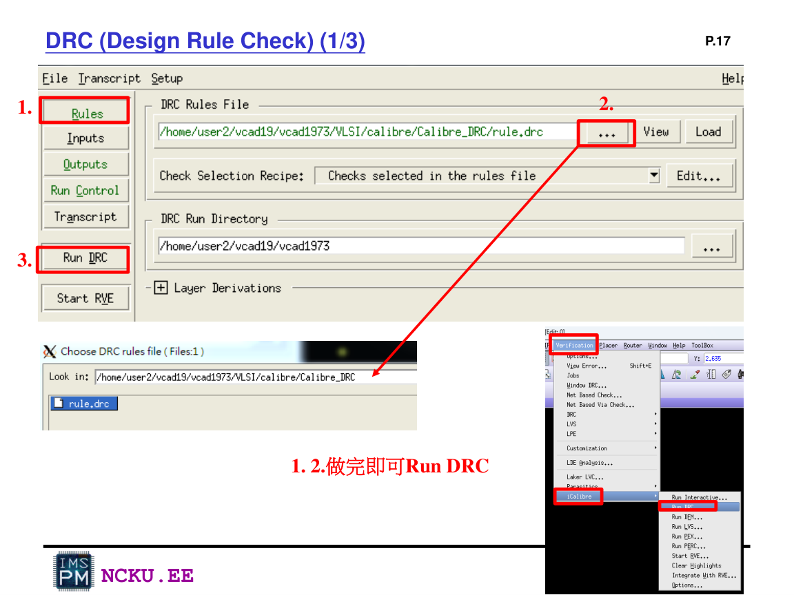
Lab9_Laker p.17：DRC 設定 rule file 並 Run DRC
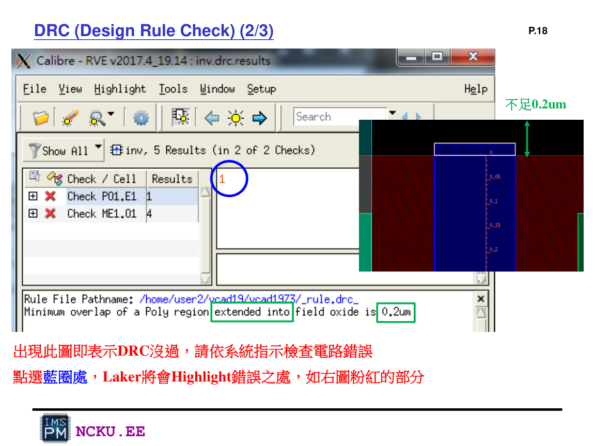
Lab9_Laker p.18：DRC 失敗時會顯示錯誤，Laker 可 highlight 錯誤位置
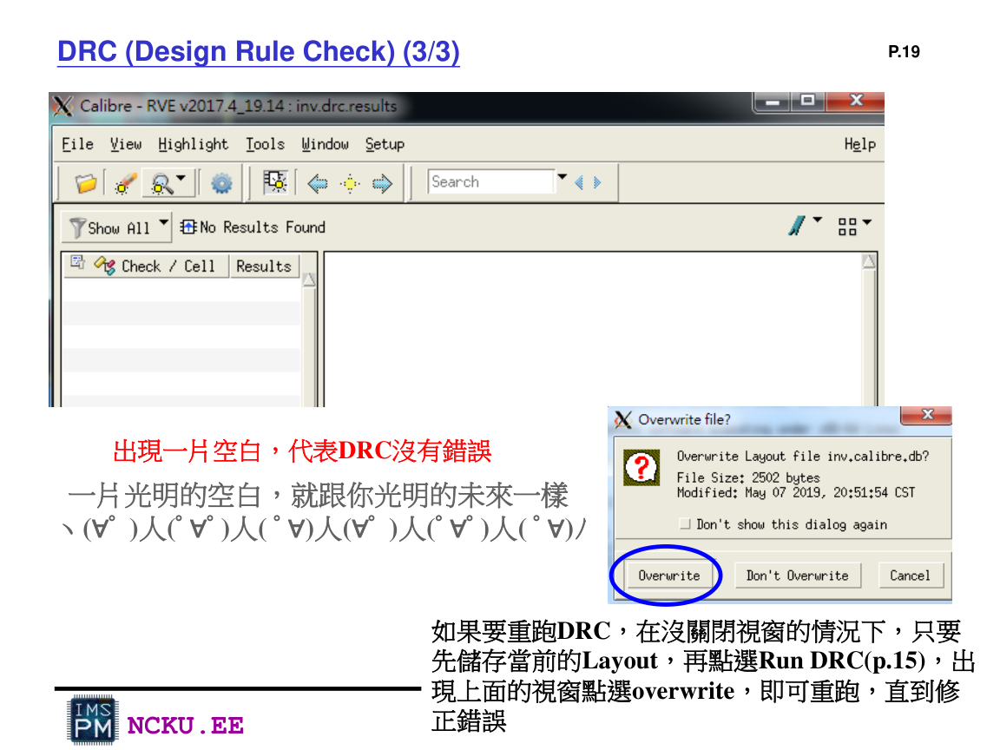
Lab9_Laker p.19：DRC 結果空白代表沒有錯誤；重跑時可 overwrite
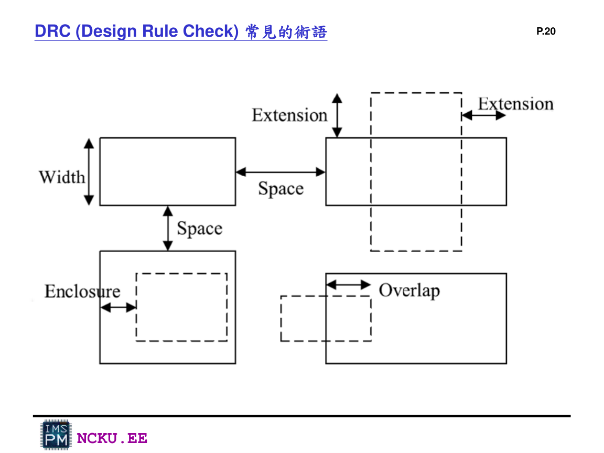
Lab9_Laker p.20：DRC 常見術語 width、space、extension、overlap、enclosure
LVS 操作與結果判讀
LVS 需要選擇 rule file，並指定 layout cell 與 spice files。Top cell 名稱與 subckt 名稱要一致，pin name 也要一致。
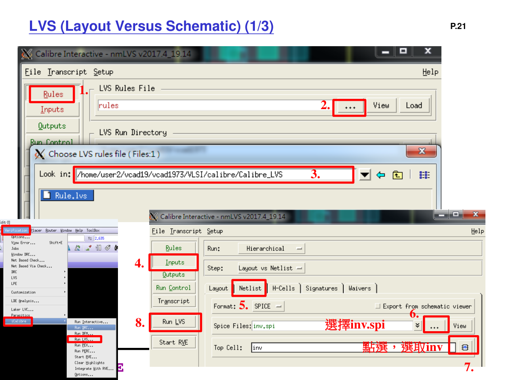
Lab9_Laker p.21：LVS 設定 rules、inputs、spice files 與 top cell
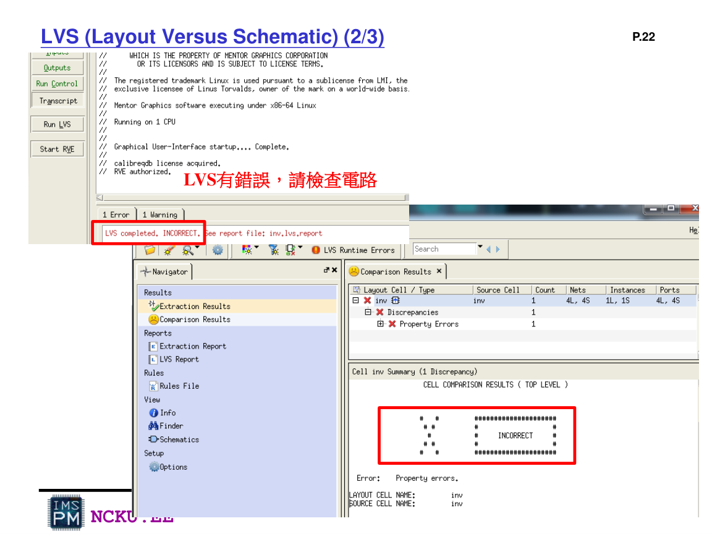
Lab9_Laker p.22：LVS 有錯誤時需檢查 property、pin、net name 或 transistor 連接
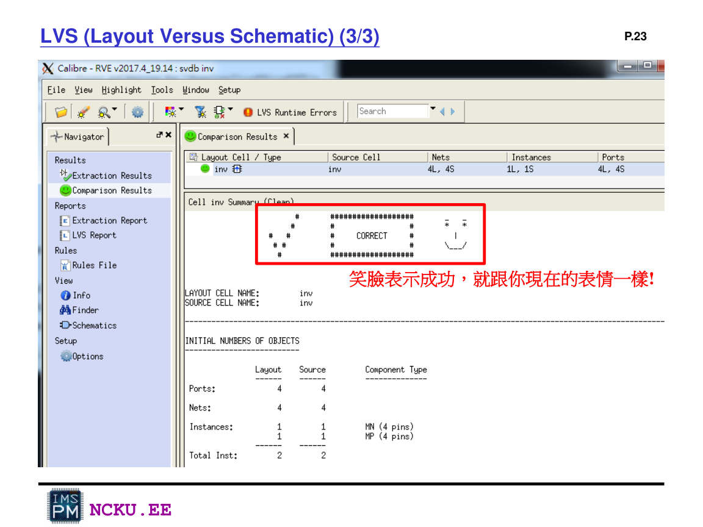
Lab9_Laker p.23：LVS 成功會出現 correct / 笑臉結果
PEX 操作與輸出檔
PEX 會產生 post-sim 需要使用的含寄生 netlist。常見輸出包含 xxx.pex.netlist、xxx.pex.netlist.pex、xxx.pex.netlist.xxx.pxi。
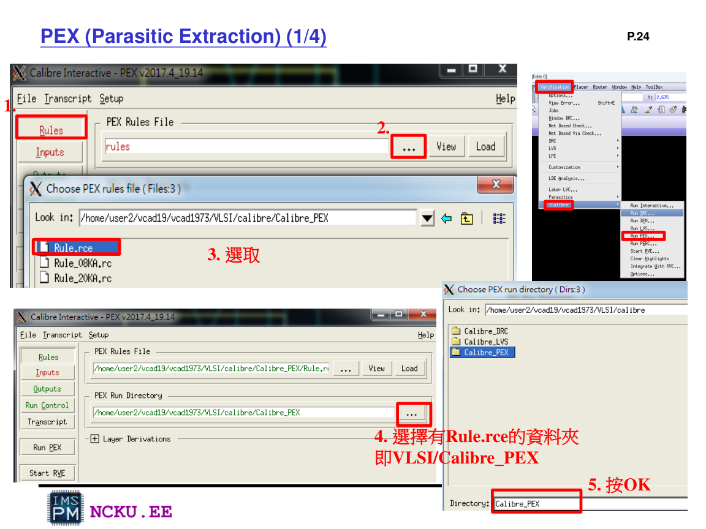
Lab9_Laker p.24：PEX 選擇 Rule.rce 與 Calibre_PEX 資料夾
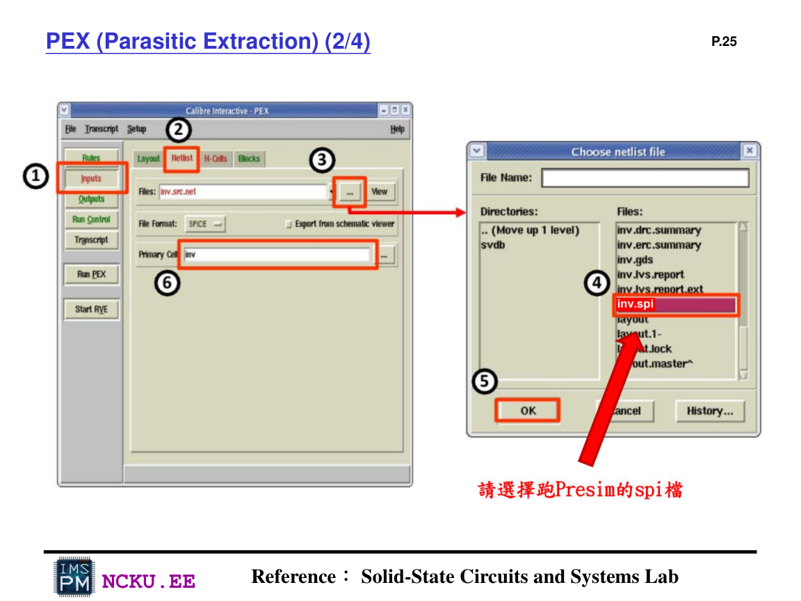
Lab9_Laker p.25：PEX input 選擇 LVS/pre-sim 使用的 spi 檔
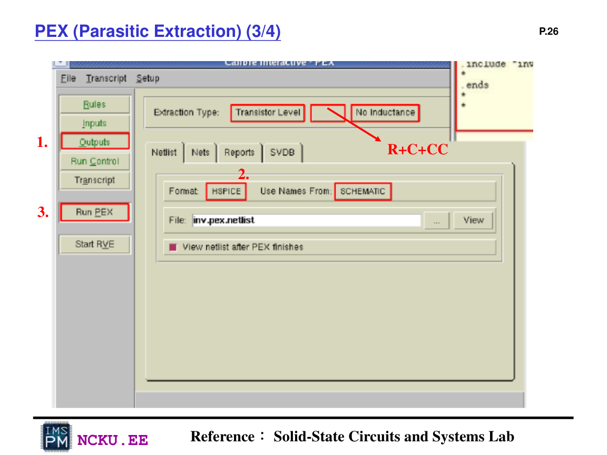
Lab9_Laker p.26：PEX outputs 設定，抽取 R+C+CC 並輸出 HSPICE 格式
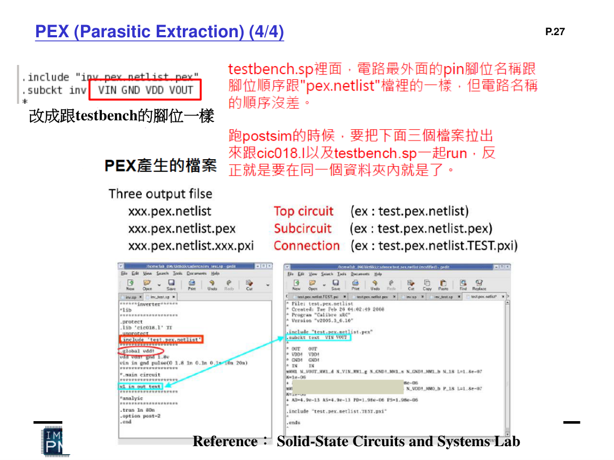
Lab9_Laker p.27：PEX 產生三個主要 output files，且 subckt 腳位需改成與 testbench 一樣